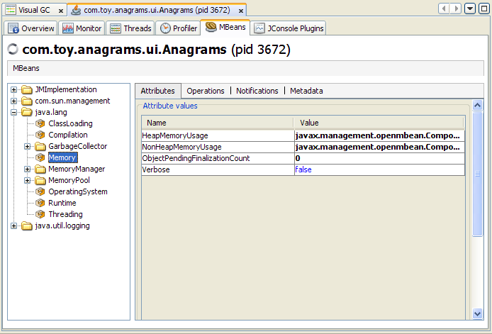
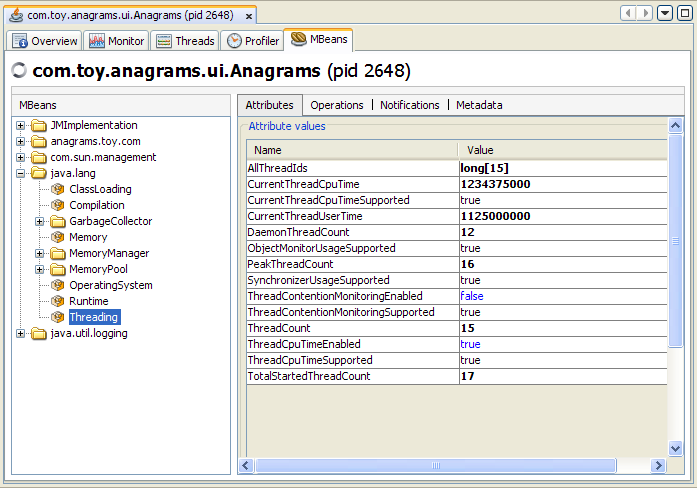
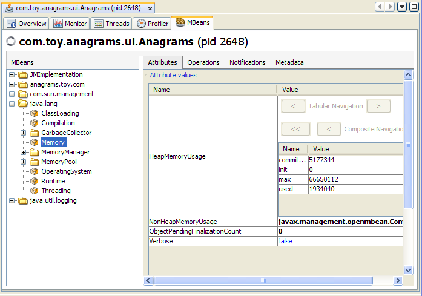
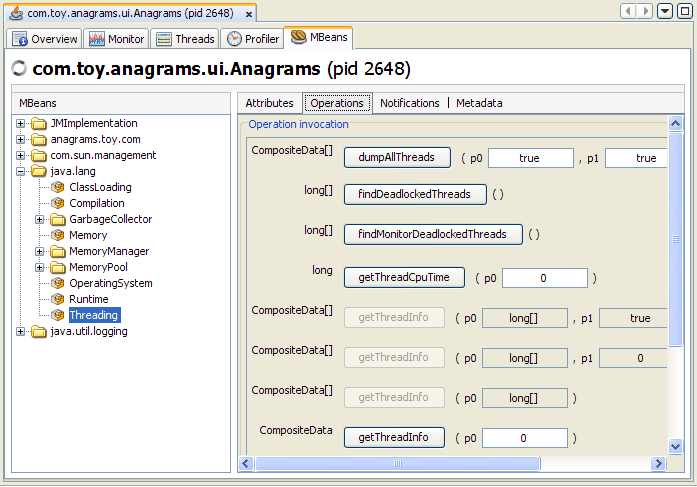
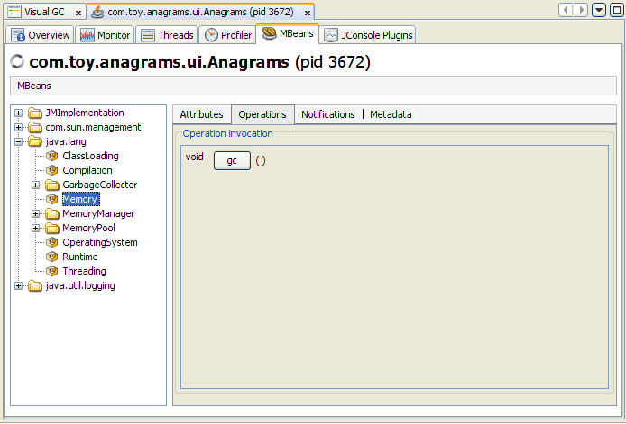
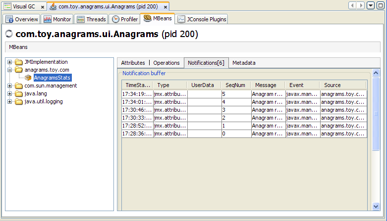
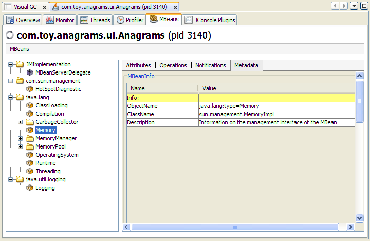
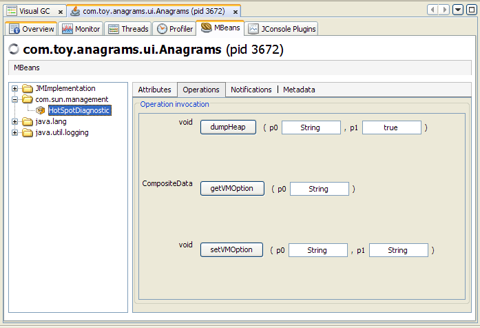

An optional VisualVM plug-in exists that adds Java Management Extensions (JMX) monitoring and management capabilities to VisualVM. This plug-in is the MBeans tab, which allows you to access all the JMX technology MBeans that are present in a Java Virtual Machine (JVM). This page provides a brief introduction to the JMX technology and to MBeans, and then introduces the VisualVM MBeans tab itself.
The JMX technology is a standard part of the Java Platform, Standard Edition (Java SE platform). The JMX technology provides a simple, standard way of managing resources such as applications, devices, and services. Because the JMX technology is dynamic, you can use it to monitor and manage resources as they are created, installed and implemented. In addition, instrumentation is provided with the Java SE platform that allows you to use the JMX technology to monitor and manage the JVM software.
Using the JMX technology, a given resource is instrumented by one or more Java objects known as Managed Beans, or MBeans. These MBeans are registered in a core-managed object server, known as an MBean server. The MBean server acts as a management agent and can run on most devices that have been enabled for the Java programming language.
The platform MBeans are a set of MBeans that is provided with the Java SE platform for monitoring and managing the JVM software and other components of the Java Runtime Environment (JRE). Each platform MBean encapsulates an aspect of the JVM software's functionality, such as the class-loading system, just-in-time (JIT) compilation system, garbage collector, and so on. These MBeans can be displayed and interacted with by using a monitoring and management tool that complies with the JMX specification, to enable you to monitor and manage these different VM functionalities. One such monitoring and management tool is VisualVM.
The Java SE platform provides a standard platform MBean server in which these platform MBeans are registered. The platform MBean server can also register any other MBeans you wish to create.
For more information about JMX technology and monitoring and management of the Java SE platform, see the following documents.
Explain how here....
The MBeans tab displays information about all the MBeans registered with the platform MBean server. The MBeans tab allows you to access the full set of the platform MXBean instrumentation. In addition, you can monitor and manage your own applications' MBeans using the MBeans tab.
The tree on the left shows all the MBeans that are currently running. When you select an MBean in the tree, tabs are displayed on the right hand side to allow you to view the MBean's attributes, operations, notifications and metadata, as shown in the figure above. These tabs will be examined in more detail in the following sections.
All the platform MXBeans and their various operations and attributes are accessible via the MBeans tab. The platform MXBeans appear under the java.lang branch. The figure above shows the attributes of the Memory platform MXBean.
By default, the MBeans are displayed in the tree based on their object names. The order of key properties specified when the object names are created is preserved by the MBeans tab when it adds MBeans to the MBean tree. The exact key property list that the MBeans tab will use to build the MBean tree will be the one returned by the method ObjectName.getKeyPropertyListString(), with type as the first key, and j2eeType, if present, as the second key.
However, relying on the default order of the ObjectName key properties can sometimes lead to unexpected behavior when the MBeans tab renders the MBean tree. For example, if two object names have similar keys but their key order differs, then the corresponding MBeans will not be created under the same node in the MBean tree.
For example, suppose you create Triangle MBean objects with the following names.
com.sun.example:type=Triangle,side=isosceles,name=1 com.sun.example:type=Triangle,name=2,side=isosceles com.sun.example:type=Triangle,side=isosceles,name=3
As far as the JMX technology is concerned, these objects will be treated in exactly the same way. The order of the keys in the object name makes no difference to the JMX technology. However, if VisualVM connects to these MBeans and the default MBean tree rendering is used, then the object com.sun.example:type=Triangle,name=2,side=isosceles will end up being created under the Triangle node, in a node called 2, which in turn will contain a sub-node called isosceles. The other two isosceles triangles, name=1 and name=3, will be grouped together under Triangle in a different node called isosceles, as shown in Figure 3-13.

To avoid this problem, you can specify the order in which the MBeans are displayed in the tree by supplying an ordered key property list when you start VisualVM at the command line. This is achieved by setting the system property com.sun.tools.jconsole.mbeans.keyPropertyList, as shown in the following command.
% visualvm -J-Dcom.sun.tools.visualvm.mbeans.keyPropertyList=key[,key]*
The key property list system property takes a comma-separated list of keys, in the order of your choosing, where key must be a string representing an object name key or an empty string. If a key specified in the list does not apply to a particular MBean, then that key will be discarded. If an MBean has more keys than the ones specified in the key property list, then the key order defined by the value returned by ObjectName.getKeyPropertyListString() will be used to complete the key order defined by keyPropertyList. Therefore, specifying an empty list of keys simply means that VisualVM will display keys in the order they appear in the MBean's ObjectName.
So, returning to the example of the Triangle MBeans cited above, you could choose to start VisualVM specifying the keyPropertyList system property, so that all your MBeans will be grouped according to their side key property first, and their name key property second. To do this, you would start VisualVM with the following command.
% visualvm -J-Dcom.sun.tools.visualvm.mbeans.keyPropertyList=side,name
Starting VisualVM with this system property specified would produce the MBean tree shown in Figure 3-14.

In Figure 3-14, the side key comes first, followed by the name key. The type key comes at the end because it was not specified in the key property list, so the MBean tree algorithm applied the original key order for the remaining keys. Consequently, the type key is appended at the end, after the keys which were defined by the keyPropertyList system property.
According to the object name convention defined by the JMX Best Practices Guidelines, the type key should always come first. So, to respect this convention you should start VisualVM with the following system property.
% jconsole -J-Dcom.sun.tools.jconsole.mbeans.keyPropertyList=type,side,name
The above command will cause VisualVM to render the MBean tree for the Triangle MBeans as shown in Figure 3-15.

This is obviously much more comprehensible than the MBean trees shown in Figure 3-13 and Figure 3-14.
Selecting the Attributes node displays all the attributes of an MBean. The following figure shows all the attributes of the Threading platform MXBean.
You can display additional information about an attribute by double-clicking on the attribute value, if it appears in bold text. For example, if you click on the value of the HeapMemoryUsage attribute of the java.lang.Memory MBean, you will see a chart that looks something like Figure 3-18.
Double-clicking on numeric attribute values will display a chart that plots changes in that numeric value. For example, double-clicking on the CollectionTime attribute of the Garbage Collector MBean PS Marksweep will plot the time spent performing garbage collection.
You can also use VisualVM to set the values of writable attributes. The value of a writable attribute is displayed in blue. Here you can see the Memory MBean's Verbose attribute.

You can set attributes by clicking on them and then editing them. For example, to enable or disable the verbose tracing of the garbage collector in VisualVM, select the Memory MXBean in the MBeans tab and set the Verbose attribute to true or false. Similarly, the class loading MXBean also has the Verbose attribute, which can be set to enable or disable class loading verbose tracing.
Selecting the Operations node displays all the operations of an MBean. The MBean operations appear as buttons, that you can click to invoke the operation.Figure 3-20 shows all the operations of the Threading platform MXBean.
Selecting an individual MBean operation in the tree displays the button for invoking the MBean operation, and the operation's MBeanOperationInfo and its Descriptor, as shown in Figure 3-21.
You can subscribe to receive notifications by selecting the Notifications node in the left-hand tree, and clicking the Subscribe button that appears on the right. The number of notifications received is displayed in square brackets, and the Notifications node itself will appear in bold text when new notifications are received. The notifications of the Memory platform MXBean are shown in Figure 3-22.
Selecting an individual MBean notification displays the MBeanNotificationInfo in the right pane, as shown in Figure 3-23.

Info here.

VisualVM's MBeans tab also allows you to tell the HotSpot VM to perform a heap dump, and to get or set a VM option via the HotSpotDiagnostic MXBean.
You can perform a heap dump manually by invoking the com.sun.management.HotSpotDiagnostic MXBean's dumpHeap operation. In addition, you can specify the HeapDumpOnOutOfMemoryError Java VM option using the setVMOption operation, so that the VM performs a heap dump automatically whenever it receives an OutOfMemoryError.